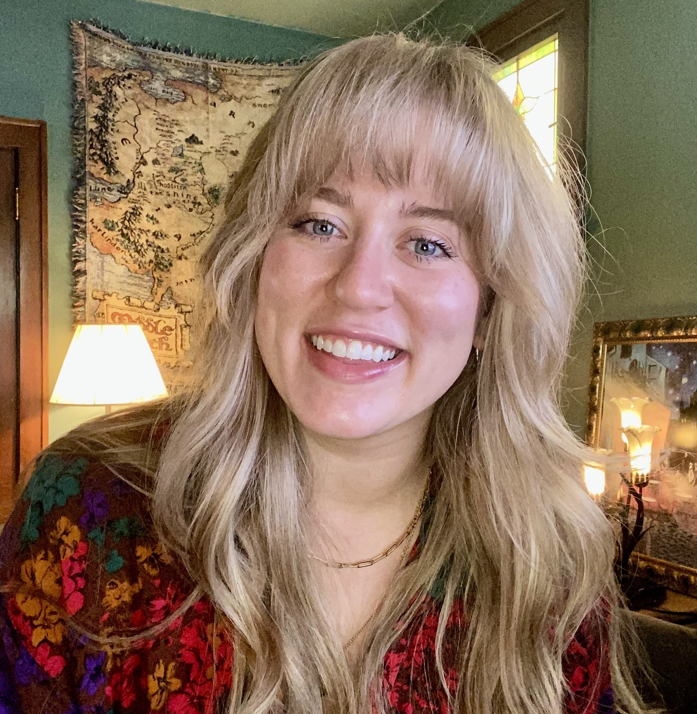

 My name is Rebekah Kozinski, but you can call me, "Bekah." It's great to meet you! This webpage will tell you a little bit about me and my journey.
I'm 28 years old living in St. Louis, MO currently working as a gastrointestinal clinc nurse. I've been a nurse for 6 years in various fields, and gradauted with my Bachelors of Science in Nursing from Southern Illinois University Edwardsville (SIUE) in 2018. I've worked as a labor and delivery nurse, an infertility nurse, a surgical nurse, and now a GI nurse! Prior to becoming a nurse I was a full-time student at SIUE and the recipient of the Meridian Scholarship.
I have many hobbies including painting, playing musical instruments (ukulele, base guilatr, and saxophone), making cocktails, traveling, hanging out with friends and family, dancing, and more. I am married to my incredible husband, Ezekiel, and we have a dog named Fernando. He's a cute, labradoodle who loves to play with tennis balls and go on walks. My husband and I enjoy traveling, bachata dancing, organizing parties, and playing board games with friends. We have been together for 8 years with many more to come!
My most recent venture is into the world of coding and web development. I am currently a student in LaunchCode's LC101 program. I hope to graduate from this program in 2025 and begin a new career-path. Learning to code hasn't been easy, but I am excited to coontinue this journey and learn all that I can! Be sure to check out my resume or github account linked at the top for additional information.
Thanks for stopping by!